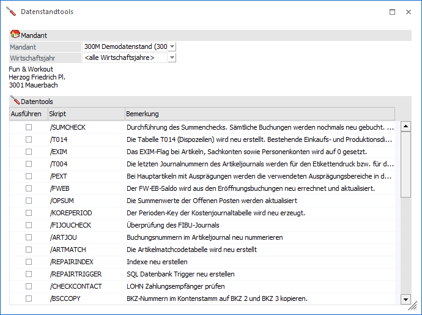
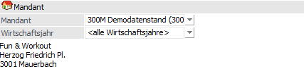
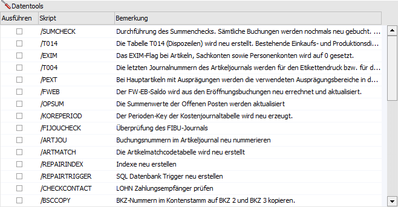
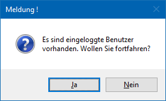
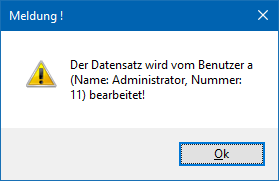
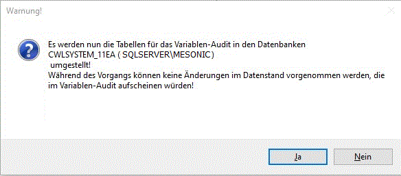

Über den Menüpunkt
1 WinLine ADMIN
1 System
1 Datentools
können gewisse Operationen durchgeführt werden, welche dabei helfen können, den Datenstand zu reorganisieren. Dies ist nur dann notwendig, wenn durch Abstürze bzw. unsachgemäße Bedienung die Daten nicht mehr konsistent sind.

Mandant

Ø Mandant
Aus der Auswahlbox kann der Mandant gewählt werden, für welchen das bzw. die Datentools durchgeführt werden sollen. Nach Bestätigung werden die Mandanteninformationen angezeigt.
Ø Wirtschaftsjahr
Aus der Auswahlbox kann gewählt werden, für welches Wirtschaftsjahr das bzw. die Datentools durchgeführt werden soll, sofern mehrere Wirtschaftsjahre vorhanden sind. Sollen alle Wirtschaftsjahre bearbeitet werden, so muss die Option "<alle Wirtschaftsjahre>" verwendet werden.
Datentools

Ø /SUMCHECK
Mit dieser Option wird das gesamte Buchungsjournal noch einmal gebucht. Alle Kontensummen und Steuerbeträge werden neu gerechnet. Im Hauptfenster wird ein Protokoll erstellt, in dem angezeigt wird, welche Konten geändert wurden.
Während dieses Datentool ausgeführt wird, kann kein Programm in der Applikation Finanzbuchhaltung geöffnet werden und umgekehrt kann in der Finanzbuchhaltung nicht gearbeitet werden, solange dieses Datentool durchläuft. Es kommt ein entsprechender Hinweis im Protokoll der Datenstands-Aktualisierung bzw. beim Aufruf eines Programms in der Finanzbuchhaltung.
Ø /T014
In der Tabelle T014 werden alle "Dispozeilen" (das sind alle Bestellungen, Zeilen aus dem Bestellvorschlag, Produktionsvorbereitungen etc.) gespeichert. Durch Aktivieren dieser Option können die Dispozeilen aufgrund der gespeicherten Daten der Belegerfassung neu aufgebaut werden.
Hinweis zu Bestell- und Produktions-Dispozeilen
Dispozeilen, die durch den Bestellvorschlag erstellt und noch nicht in eine Bestellung übernommen wurden, können nicht neu aufgebaut werden - ebenso Produktions-Dispozeilen. Das sind Zeilen in Produktionsartikeln mit auftragsbezogener Bestellung (ab dem Zeitpunkt des Drucks der Auftragsbestätigung in der Fakturierung wird für diese Artikel automatisch eine Produktions-Dispozeile erzeugt).
Hinweis zu Reservierungsartikeln
Bei einem Rebuild der T014 werden grundsätzlich die Reservierungszeilen komplett gelöscht. D.h. nach dem Durchführen des Rebuild müssen die Reservierungen nochmals erzeugt werden. Dies kann z.B. im Programm "Reservierungen bearbeiten" (WinLine FAKT - Einkauf - Reservierungen) durch Anwahl des Buttons "Reservierungen neu berechnen" erfolgen.
Wenn in der Datei MESONIC.INI folgender Eintrag vorhanden ist,
[T014Rebuild]
From=VONArtikel
To=BISArtikel
kann der Rebuild der Tabelle T014 (Dispotabelle) für einen bestimmten Artikelbereich eingeschränkt werden, wobei anstelle von "VONArtikel" und "BISArtikel" eine gültige Artikelnummer eingetragen werden muss. Mit dieser Einstellung wird man beim T014-Rebuild gefragt, ob dieses Datentool nur für den selektierten Bereich durchgeführt werden soll.
Hinweis zu Prüfungen
Vor der Ausführung des Datentools werden folgende Prüfungen durchgeführt:
ü Dieses Datentool kann für Filialmandanten nicht ausgeführt werden. Eine entsprechende Meldung wird ausgegeben.
ü Zusätzlich erfolgt eine Prüfung,
ob sich Benutzer in den Applikationen WinLine FAKT oder WinLine PPS befinden.
Ist dies der Fall und werden von den Benutzern keine weiteren Aktionen in diesen
Applikationen durchgeführt, so erfolgt eine entsprechende Warnung.

ü Werden Aktion (z.B. Belegerfassen)
in der WinLine FAKT durchgeführt oder führt ein Benutzer eine
Produktionsendmeldung in der WinLine PPS durch, so wird das Datentool mit
entsprechender Meldung abgebrochen.

Ø /EXIM
Bei allen Stammdatensätzen wird das EXIM-Kennzeichen auf 0 gesetzt. Dadurch sind alle Stammdatensätze als aktuelle Datensätze gekennzeichnet.
Ø /T004
Die letzten Journalnummern des Artikeljournals (WinLine FAKT) werden für den Etikettendruck bzw. für das Lagerjournal buchen rückgeschrieben.
Ø /PEXT
Bei Verwendung von Ausprägungsartikeln werden die verwendeten Skalenbereiche in den Artikelstamm zurückgeschrieben.
Ø /FWEB
Der FW-EB-Saldo wird aus den Eröffnungsbuchungen neu errechnet und aktualisiert.
Hinweis
Während dieses Datentool ausgeführt wird, kann kein Programm in der WinLine FIBU geöffnet werden und umgekehrt kann in der WinLine FIBU nicht gearbeitet werden, solange dieses Datentool durchläuft. Es kommt ein entsprechender Hinweis im Protokoll der Datenstands-Aktualisierung bzw. beim Aufruf eines Programms in der WinLine FIBU.
Ø /OPSUM
Damit können die Summenwerte der Offenen Posten aktualisiert werden (wird der Text "Die OP-Summen wurden aktualisiert!" ausgegeben, so bedeutet dies, dass eine Aktualisierung notwendig war).
Hinweis
Während dieses Datentool ausgeführt wird, kann kein Programm in der WinLine FIBU geöffnet werden und umgekehrt kann in der WinLine FIBU nicht gearbeitet werden, solange dieses Datentool durchläuft. Es kommt ein entsprechender Hinweis im Protokoll der Datenstands-Aktualisierung bzw. beim Aufruf eines Programms in der WinLine FIBU.
Ø /KOREPERIOD
Der Perioden-Key der Kostenjournaltabelle wird neu erzeugt.
Ø /FIJOUCHECK
Mit Hilfe dieses Datentools wird eine Überprüfung des FIBU-Journals durchgeführt.
Hinweis
Während dieses Datentool ausgeführt wird, kann kein Programm in der WinLine FIBU geöffnet werden und umgekehrt kann in der WinLine FIBU nicht gearbeitet werden, solange dieses Datentool durchläuft. Es kommt ein entsprechender Hinweis im Protokoll der Datenstands-Aktualisierung bzw. beim Aufruf eines Programms in der WinLine FIBU.
Ø /ARTJOU
Mit dieser Option können die Journalnummern im Artikeljournal (WinLine FAKT) neu aufgebaut werden.
Ø /ARTMATCH
Damit kann der "schnelle" Artikelmatchcode neu aufgebaut werden.
Ø /REPAIRINDEX
Mit dieser Funktion können alle Indizes neu erstellt werden. Bevor diese Aktion durchgeführt wird, werden vorher alle Indizes gelöscht. Diese Option kann ggf. dann durchgeführt werden, wenn es z.B. zu der Fehlermeldung kommt, dass Datensätze nicht eingefügt werden können.
Ø /REPAIRTRIGGER
Unter bestimmten Umständen kann es vorkommen, dass Trigger in der Daten-Datenbank nicht mehr vorhanden sind (Trigger sind z.B. dafür verantwortlich, dass das Auditprotokoll Daten gefüllt wird). Ist das der Fall, können diese Trigger durch diese Option neu erstellt werden.
Ø /CHECKCONTACTS
Mit diesem Tool kann der Kontaktestamm auf doppelte Einträge geprüft werden. Ist es der Fall das doppelte Einträge dafür gefunden werden, so werden diese bis auf jenen des aktuellsten Wirtschaftsjahrs gelöscht.
Ø /BSCCOPY
Mit dieser Option können die BKZ's "BKZ 1 Soll" und "BKZ 1 Haben" im Kontenstamm auf die Felder "BKZ 2 Soll", "BKZ 2 Haben", "BKZ 3 Soll" und "BKZ 3 Haben" kopiert. Die BKZ-Struktur dazu wird allerdings nicht angelegt.
Ø /STDCONTACT
Mit dieser Option wird für das ausgewählte Jahr bzw. für alle Wirtschaftsjahre das Standardkennzeichen in den ersten Ansprechpartner jeden Kontos gesetzt, auf dem noch kein Standardansprechpartner definiert wurde.
Ø /UMLAGEKZ
Mit dieser Option wird in allen Arbeitnehmern das Umlagekennzeichen aus dem Betriebsdatenstamm übernommen, sofern beim Arbeitnehmer das Umlagekennzeichen auf 1 steht.
Ø /DISPOSOLL
Mit dieser Option können Ressourcenzeilen von teilendgemeldeten Produktionsaufträgen neu geschrieben werden.
Ø /KONTOSTAT
Mit diesem Datentool kann das Erlöskonto aus der Belegmittelteilszeile in die Statistik übergeben werden. Dabei wird anhand des Personenkontos, des Artikels und der Fakturennummer der zugehörige Beleg gesucht. Falls ein Artikel mehrmals mit verschiedenen Erlöskonten im Beleg vorkommt, wird das erste Erlöskonto verwendet, das vorkommt. Dieses Datentool kann für ein bestimmtes Wirtschaftsjahr durchgeführt werden, oder über alle Wirtschaftsjahre.
Ø /KONTENMATCH
Mit dieser Option wird die Kontenmatchtabelle für die Autovervollständigungs-Funktion neu aufgebaut. Damit wird gewährleistet, dass der Kontenmatch seine optimale Kontenanzeige erhält.
Ø /HSL
Mit Ausführung des Datentools wird bei Belegen die Stücklisten-Id mit den dazugehörigen Stücklisten überprüft. Sind nicht passende Stücklisten-Verknüpfungen vorhanden, werden diese automatisch korrigiert. Es wird hierbei ein Protokoll abgestellt, welches die geänderten Stücklisten enthält.
Hinweis
Die Durchführung dieses Datentools empfiehlt sich, wenn nach Durchführung eines Datenchecks auf Handels- bzw. Produktionsstücklisten (WinLine START - Abschluss - Daten-Check) das Prüfprotokoll folgende Meldungen ausgibt:
ü Stücklisten-Verweisfehler! T090
stimmt nicht mit T324 überein
Beleg verweist auf die selbe Stückliste
Ø /OLAPCMP
Mit Hilfe dieses Datentools werden die mandantenabhängigen Olap-Definition (vor Version 10.0 Build 10000) in die mandantenunabhängigen System-Tabellen übernommen.
Ø /DESCSTAT
Dieses Datentool belegt die Artikelbezeichnung in der Statistiktabelle mit jener aus dem Artikelstamm.
Ø /REPAIRSYSTRIGGER
Unter bestimmten Umständen kann es vorkommen, dass Trigger in der System-Datenbank nicht mehr vorhanden sind (Trigger sind z.B. dafür verantwortlich, dass das Auditprotokoll Daten gefüllt wird). Ist das der Fall, können diese Trigger durch diese Option neu erstellt werden.
Ø /REPAIREMAILMATCH
Durch Ausführung dieses Datenstandtools wird die Tabelle T197 (Email Vervollständigung) neu aufgebaut und mit den Email-Adressen der folgenden Objekte befüllt:
ü Personenkonten
ü Ansprechpartner
ü Kontakte
ü Arbeitnehmer
ü Vertreter
ü Kampagnen
Hinweis
Wenn das Tool für alle Wirtschaftsjahre durchgeführt wird und es das gleiche Objekt in mehreren Wirtschaftsjahren gibt, dann wird die Email-Adresse aus dem aktuellsten Wirtschaftsjahr in die T197 eingetragen.
Ø /COMPCONTACT
Durch Ausführung dieses Datenstandtools wird der Firmenkontakt, kurz 'COMP-Kontakt', automatisch für die bestehenden Personenkonten angelegt.
Ø /NEW_COCKPIT_DEFINITION
Mit Hilfe dieses Datentools werden die Cockpit-Definitionen aus der T444CMP (Speicherort der Cockpits vor Version 10.1 Build 10001) in die Tabellen T491CMP, T492CMP und T493CMP übernommen und die Objektberechtigungen geschrieben.
Hinweis
Mit Hilfe des mesonic INI-Eintrags
ForUser=XX
kann die erneute Übernahme für einen bestimmten Benutzer durchgeführt werden.
Ø /CLEAN_COCKPIT_TABLES
Durch Ausführung dieses Datentools werden alle Cockpits (inklusive Zuordnung und Objektrechte) von nicht vorhandenen oder inaktiven Benutzern gelöscht.
Ø /CREATEFUNKTIONS
Mit dieser Option können vordefinierte "Tabellenwertfunktionen" erstellt werden, sofern sie in der Datenbank noch nicht vorhanden sind. Grundsätzlich werden diese "Tabellenwertfunktionen" im Zuge des Upsize Datenstand angelegt.
Ø /CREATESTANDARDPROPERTIES
Durch Ausführung dieses Datentools werden alle Standard-Eigenschaften, welche von mesonic fix ausgeliefert werden, neu angelegt.
Ø /GEOPLZ
Mit dieser Option wird ein Verweis auf die PLZ-Geo-Dateien erstellt, sofern noch kein Verweis bzw. Eintrag vorhanden ist. Davon betroffen sind die Datenbereiche Personenkonten, Kontakte/Ansprechpartner, Vertreter, Arbeitnehmerstamm A und D.
Ø /VERFUEGBARER_LAGERSTAND
Die Artikelstamm-Information "nicht verfügbarer Bestand" wird auf Grundlage der nicht verfügbaren Lagerorte (WinLine LAGERMANAGEMENT) neu gebildet.
Ø /CHECKEXTENSION
Mit Hilfe dieses Datentools werden die Lagerstandsübernahmebuchungen von Zwischenartikel korrigiert.
Achtung
Ein Ausführen dieses Datentools ist nur notwendig, wenn im aktuellen Mandanten, sowie im Vorjahresmandanten, die Option "Zwischenartikel immer mit der Summe ihrer Ausprägungen aktualisieren" (FAKT-Parameter) aktiviert wurde. Des Weiteren muss die Lagerstandsübernahme mit einer Version kleiner Version 10.5 (Build 10005.18) vollzogen worden sein. In allen anderen Fällen darf das Datentool nicht angewendet werden!
Ø /CONVERTVARAUDIT
Mit Hilfe dieses Datentools wird die Variablenaudit-Tabelle T498 mit T494 abgeglichen und an die Datenbankstrukturen ab Version 11.0 umgestellt. Im Zuge einer erfolgreichen Umstellung wird T494 bei dem Abgleich mit T498 geleert.
Der Vorgang wird in zwei Schritten ausgeführt, und zwar zuerst die Bearbeitung von Einträgen in T494 und dann die Aktualisierung von Einträgen in T498. Der erste Schritt von diesem Tool kann im laufendem Betrieb ausgeführt werden (Achtung: der Prozess kann einiger Zeit in Anspruch nehmen), wonach die folgende Meldung vorm Start des zweiten Schritts ausgegeben wird:

Wenn "Ja" gewählt wird, werden die Variablenaudit-Einträge in T498 aktualisiert. Währenddessen sollten keinen Benutzer in der WinLine arbeiten, da während der Aktualisierung keine Variablenaudit-Einträge in die T498 geschrieben werden können. Es empfiehlt sich daher, alle Benutzer aus der WinLine abzumelden, bevor die Abfrage bestätigt wird.
Hinweis
Erst nachdem das Tool für die Umstellung von T498 ausgeführt wurde, enthalten die Variablen-Audit Auswertungen u.U. konsistente Daten für Variablenaudit-Einträge, die in Version vor Version 11.0 erzeugt wurden.
Ø T083EXT
Die Reihenfolge der Ausprägungen kann im Menüpunkt "Ausprägungen verwalten" verschoben werden. Damit kann es im Artikeljournal bei der Tabellenausgabe (Einblenden der Spalten für die Ausprägungen 1 und 2) zu Abweichungen kommen, welche dieses Datentool korrigiert.
Ø /LISTLOHND
Im Verlauf der WinLine Edition 2023 wurde der Arbeitnehmer-Zugriff in Mandanten mit Landeskennzeichen "Deutschland", in den Applikationen WinLine LIST und WinLine EXIM, auf den Mitarbeiterstamm des WinLine SMART umgestellt. Mit Hilfe dieses Datentools können die daraus resultierenden nicht mehr verwendeten Objekte gelöscht werden:
ü Listen des Typs "11 - Arbeitnehmerstamm D" (inklusive Filter, Objektberechtigungen, etc.)
ü EXIM-Vorlagen des Typs "14 - Arbeitnehmer D" (inklusive Filter, Objektberechtigungen, etc.)
ü EXIM-Vorlagen des Typs "33 - Lohnerfassung D" (inklusive Filter, Objektberechtigungen, etc.)
Buttons
Ø Ok
Durch Drücken des Buttons "Ok" oder der F5-Taste wird die Aktualisierung gestartet, wobei alle Datentools durchgeführt werden, bei denen die Checkbox aktiviert wurde.
Ø Ende
Durch Drücken des "Ende"-Buttons bzw. der ESC-Taste wird das Fenster geschlossen.